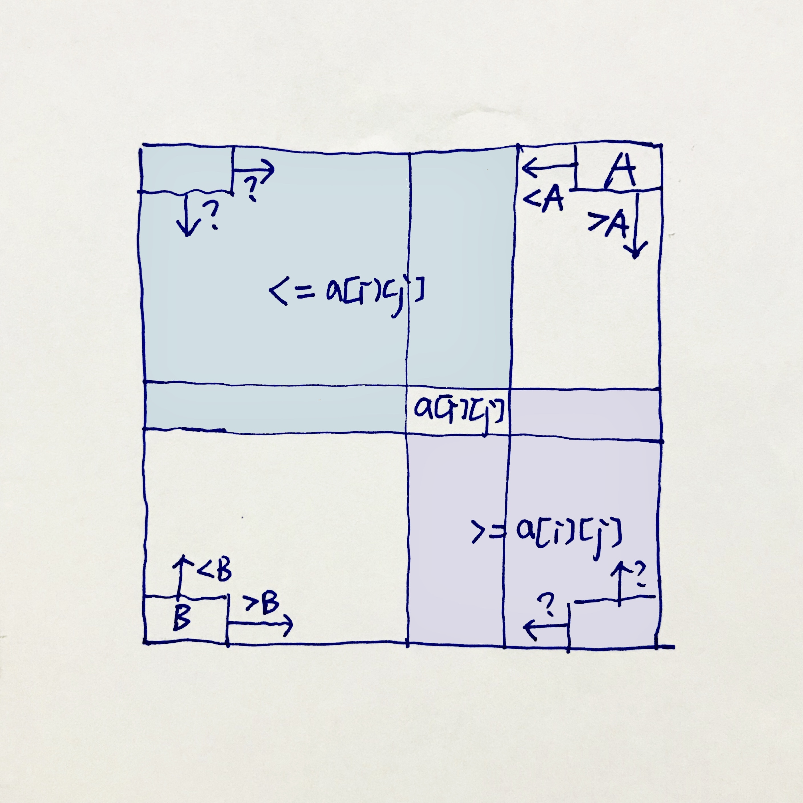
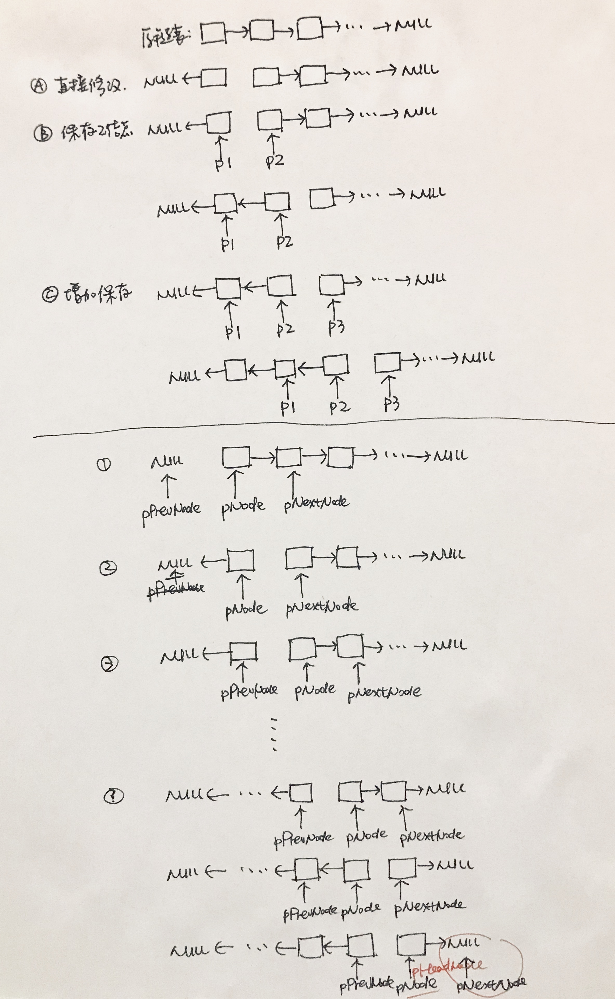
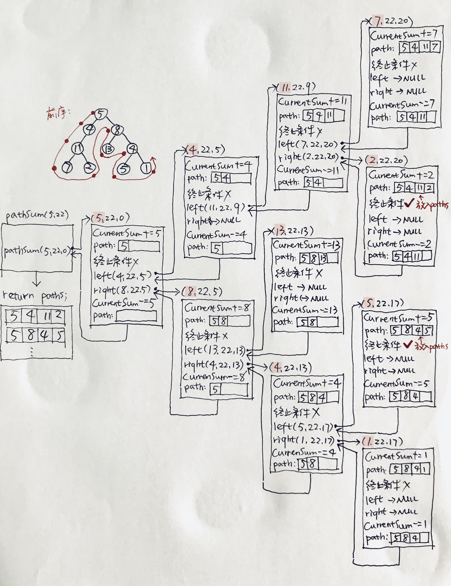
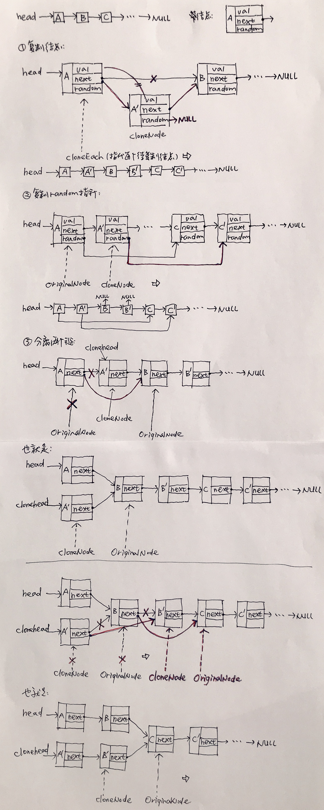

<!DOCTYPE html>
<html>
<head><meta name="generator" content="Hexo 3.9.0">
  <!-- hexo-inject:begin --><!-- hexo-inject:end --><meta charset="utf-8">
  

  
  <title>剑指offer小结 | </title>
  <meta name="viewport" content="width=device-width, initial-scale=1, maximum-scale=1">
  <meta name="description" content="抱着好奇心翻开了剑指offer，原来是50道编程题的解题啊。随便翻了一下翻到第23题，发现讲得很通俗易懂，所以决定要把它看完（还没有看完，也不是按顺序看）。可是仔细看时发现，有些题解只描述了过程，为什么这样做却没有直白地写出来，所以我在解释部分补充了一点点自己的思考，还包括草图，也包括具体讨论判断条件或者边界条件的情况。语言用的是C++，草图用Ilustrator画会比较慢，所以暂时先把稿纸拍上来">
<meta property="og:type" content="article">
<meta property="og:title" content="剑指offer小结">
<meta property="og:url" content="http://xiaomeizhuang.github.io/2019/10/10/剑指offer小结/index.html">
<meta property="og:site_name">
<meta property="og:description" content="抱着好奇心翻开了剑指offer，原来是50道编程题的解题啊。随便翻了一下翻到第23题，发现讲得很通俗易懂，所以决定要把它看完（还没有看完，也不是按顺序看）。可是仔细看时发现，有些题解只描述了过程，为什么这样做却没有直白地写出来，所以我在解释部分补充了一点点自己的思考，还包括草图，也包括具体讨论判断条件或者边界条件的情况。语言用的是C++，草图用Ilustrator画会比较慢，所以暂时先把稿纸拍上来">
<meta property="og:locale" content="en">
<meta property="og:image" content="http://xiaomeizhuang.github.io/2019/10/10/剑指offer小结/3_240.jpg">
<meta property="og:image" content="http://xiaomeizhuang.github.io/2019/10/10/剑指offer小结/16_206.jpg">
<meta property="og:image" content="http://xiaomeizhuang.github.io/2019/10/10/剑指offer小结/23_102.jpg">
<meta property="og:image" content="http://xiaomeizhuang.github.io/2019/10/10/剑指offer小结/25_113.jpg">
<meta property="og:image" content="http://xiaomeizhuang.github.io/2019/10/10/剑指offer小结/26_138.jpg">
<meta property="og:updated_time" content="2019-10-17T07:56:39.876Z">
<meta name="twitter:card" content="summary">
<meta name="twitter:title" content="剑指offer小结">
<meta name="twitter:description" content="抱着好奇心翻开了剑指offer，原来是50道编程题的解题啊。随便翻了一下翻到第23题，发现讲得很通俗易懂，所以决定要把它看完（还没有看完，也不是按顺序看）。可是仔细看时发现，有些题解只描述了过程，为什么这样做却没有直白地写出来，所以我在解释部分补充了一点点自己的思考，还包括草图，也包括具体讨论判断条件或者边界条件的情况。语言用的是C++，草图用Ilustrator画会比较慢，所以暂时先把稿纸拍上来">
<meta name="twitter:image" content="http://xiaomeizhuang.github.io/2019/10/10/剑指offer小结/3_240.jpg">
  
  
    <link rel="icon" href="/favicon.png">
  
  
    <link href="//fonts.googleapis.com/css?family=Source+Code+Pro" rel="stylesheet" type="text/css">
  
  <link rel="stylesheet" href="/css/style.css"><!-- hexo-inject:begin --><!-- hexo-inject:end -->
</head>
</html>
<body>
  <!-- hexo-inject:begin --><!-- hexo-inject:end --><div id="container">
    <div id="wrap">
      <header id="header">
  <div id="banner"></div>
  <div id="header-outer" class="outer">
    <div id="header-title" class="inner">
      <h1 id="logo-wrap">
        <a href="/" id="logo"></a>
      </h1>
      
    </div>
    <div id="header-inner" class="inner">
      <nav id="main-nav">
        <a id="main-nav-toggle" class="nav-icon"></a>
        
          <a class="main-nav-link" href="/">Home</a>
        
          <a class="main-nav-link" href="/Archives">Archives</a>
        
          <a class="main-nav-link" href="https://github.com/xiaomeizhuang">Github</a>
        
          <a class="main-nav-link" href="/About">About</a>
        
      </nav>
      <nav id="sub-nav">
        
        <a id="nav-search-btn" class="nav-icon" title="Search"></a>
      </nav>
      <div id="search-form-wrap">
        <form action="//google.com/search" method="get" accept-charset="UTF-8" class="search-form"><input type="search" name="q" class="search-form-input" placeholder="Search"><button type="submit" class="search-form-submit">&#xF002;</button><input type="hidden" name="sitesearch" value="http://xiaomeizhuang.github.io"></form>
      </div>
    </div>
  </div>
</header>
      <div class="outer">
        <section id="main"><article id="post-剑指offer小结" class="article article-type-post" itemscope itemprop="blogPost">
  <div class="article-meta">
    <a href="/2019/10/10/剑指offer小结/" class="article-date">
  <time datetime="2019-10-10T13:50:36.000Z" itemprop="datePublished">2019-10-10</time>
</a>
    
  </div>
  <div class="article-inner">
    
    
      <header class="article-header">
        
  
    <h1 class="article-title" itemprop="name">
      剑指offer小结
    </h1>
  

      </header>
    
    <div class="article-entry" itemprop="articleBody">
      
      <!-- Table of Contents -->
      
        <div id="toc" class="toc-article">
          <strong class="toc-title">目录</strong>
          <ol class="toc"><li class="toc-item toc-level-3"><a class="toc-link" href="#赋值运算符函数"><span class="toc-number">1.</span> <span class="toc-text">赋值运算符函数</span></a></li><li class="toc-item toc-level-3"><a class="toc-link" href="#实现singleton模式"><span class="toc-number">2.</span> <span class="toc-text">实现Singleton模式</span></a></li><li class="toc-item toc-level-3"><a class="toc-link" href="#二维数组中的查找"><span class="toc-number">3.</span> <span class="toc-text">二维数组中的查找</span></a></li><li class="toc-item toc-level-3"><a class="toc-link" href="#替换空格"><span class="toc-number">4.</span> <span class="toc-text">替换空格</span></a></li><li class="toc-item toc-level-3"><a class="toc-link" href="#从头到尾打印链表"><span class="toc-number">5.</span> <span class="toc-text">从头到尾打印链表</span></a></li><li class="toc-item toc-level-3"><a class="toc-link" href="#重建二叉树"><span class="toc-number">6.</span> <span class="toc-text">重建二叉树</span></a></li><li class="toc-item toc-level-3"><a class="toc-link" href="#用两个栈实现队列"><span class="toc-number">7.</span> <span class="toc-text">用两个栈实现队列</span></a></li><li class="toc-item toc-level-3"><a class="toc-link" href="#旋转数组的最小数字"><span class="toc-number">8.</span> <span class="toc-text">旋转数组的最小数字</span></a></li><li class="toc-item toc-level-3"><a class="toc-link" href="#斐波那契数列"><span class="toc-number">9.</span> <span class="toc-text">斐波那契数列</span></a></li><li class="toc-item toc-level-3"><a class="toc-link" href="#二进制中1的个数"><span class="toc-number">10.</span> <span class="toc-text">二进制中1的个数</span></a></li><li class="toc-item toc-level-3"><a class="toc-link" href="#数值的整数次方"><span class="toc-number">11.</span> <span class="toc-text">数值的整数次方</span></a></li><li class="toc-item toc-level-3"><a class="toc-link" href="#打印1到最大的n位数"><span class="toc-number">12.</span> <span class="toc-text">打印1到最大的n位数</span></a></li><li class="toc-item toc-level-3"><a class="toc-link" href="#在o1时间删除链表节点"><span class="toc-number">13.</span> <span class="toc-text">在O(1)时间删除链表节点</span></a></li><li class="toc-item toc-level-3"><a class="toc-link" href="#调整数组顺序使奇数位于偶数前面"><span class="toc-number">14.</span> <span class="toc-text">调整数组顺序使奇数位于偶数前面</span></a></li><li class="toc-item toc-level-3"><a class="toc-link" href="#链表中倒数第k个结点"><span class="toc-number">15.</span> <span class="toc-text">链表中倒数第k个结点</span></a></li><li class="toc-item toc-level-3"><a class="toc-link" href="#反转链表"><span class="toc-number">16.</span> <span class="toc-text">反转链表</span></a></li><li class="toc-item toc-level-3"><a class="toc-link" href="#合并两个排序的链表"><span class="toc-number">17.</span> <span class="toc-text">合并两个排序的链表</span></a></li><li class="toc-item toc-level-3"><a class="toc-link" href="#树的子结构"><span class="toc-number">18.</span> <span class="toc-text">树的子结构</span></a></li><li class="toc-item toc-level-3"><a class="toc-link" href="#二叉树的镜像"><span class="toc-number">19.</span> <span class="toc-text">二叉树的镜像</span></a></li><li class="toc-item toc-level-3"><a class="toc-link" href="#顺时针打印矩阵"><span class="toc-number">20.</span> <span class="toc-text">顺时针打印矩阵</span></a></li><li class="toc-item toc-level-3"><a class="toc-link" href="#包含min函数的栈"><span class="toc-number">21.</span> <span class="toc-text">包含min函数的栈</span></a></li><li class="toc-item toc-level-3"><a class="toc-link" href="#栈的压入弹出序列"><span class="toc-number">22.</span> <span class="toc-text">栈的压入、弹出序列</span></a></li><li class="toc-item toc-level-3"><a class="toc-link" href="#从上往下打印二叉树"><span class="toc-number">23.</span> <span class="toc-text">从上往下打印二叉树</span></a></li><li class="toc-item toc-level-3"><a class="toc-link" href="#二叉搜索树的后序遍历序列"><span class="toc-number">24.</span> <span class="toc-text">二叉搜索树的后序遍历序列</span></a></li><li class="toc-item toc-level-3"><a class="toc-link" href="#二叉树中和为某一值的路径"><span class="toc-number">25.</span> <span class="toc-text">二叉树中和为某一值的路径</span></a></li><li class="toc-item toc-level-3"><a class="toc-link" href="#复杂链表的复制"><span class="toc-number">26.</span> <span class="toc-text">复杂链表的复制</span></a></li><li class="toc-item toc-level-3"><a class="toc-link" href="#二叉搜索树与双向链表"><span class="toc-number">27.</span> <span class="toc-text">二叉搜索树与双向链表</span></a></li><li class="toc-item toc-level-3"><a class="toc-link" href="#字符串的排列"><span class="toc-number">28.</span> <span class="toc-text">字符串的排列</span></a></li><li class="toc-item toc-level-3"><a class="toc-link" href="#数组中出现次数超过一半的数字"><span class="toc-number">29.</span> <span class="toc-text">数组中出现次数超过一半的数字</span></a></li><li class="toc-item toc-level-3"><a class="toc-link" href="#最小的k个数"><span class="toc-number">30.</span> <span class="toc-text">最小的k个数</span></a></li></ol>
        </div>
      
        <p>抱着好奇心翻开了剑指offer，原来是50道编程题的解题啊。随便翻了一下翻到第23题，发现讲得很通俗易懂，所以决定要把它看完（还没有看完，也不是按顺序看）。可是仔细看时发现，有些题解只描述了过程，为什么这样做却没有直白地写出来，所以我在解释部分补充了一点点自己的思考，还包括草图，也包括具体讨论判断条件或者边界条件的情况。语言用的是C++，草图用Ilustrator画会比较慢，所以暂时先把稿纸拍上来<sup>-</sup>''（如果有错误可以得到指正再好不过啦～邮箱在首页 <a id="more"></a></p>
<h3 id="赋值运算符函数">赋值运算符函数</h3>
<p>题目：</p>
<p>解释：</p>
<p>代码：</p>
<h3 id="实现singleton模式">实现Singleton模式</h3>
<p>题目：</p>
<p>解释：</p>
<p>代码：</p>
<h3 id="二维数组中的查找">二维数组中的查找</h3>
<p>题目：<a href="https://leetcode.com/problems/search-a-2d-matrix-ii/" target="_blank" rel="noopener">leetcode：240. Search a 2D Matrix II</a></p>
<p>解释：</p>
<p>书中没有直白地解释为什么从数组的右上角开始遍历，只是按照某个例子展开讲了从右上角遍历的这个过程。所以自己认真思考了一下那是为什么从右上角（或者左下角）开始寻找呢？首先数组的任意行和列都是升序，利用这个规律，可以得知对于某个元素<span class="math inline">\(a[i][j]\)</span>，它的左上角，以及它所在行的左侧和所在列的上部分组成的区域（蓝色）内的元素，都不会大于这个元素，它的右下角，以及它所在行的右侧和所在列的下部分组成的区域（紫色）内的元素都不会小于这个元素。按照常理从左上角开始搜索，会导致搜索路径不明确，也就是向右或者向下都可。但是从右上角搜索，不会有这种模糊，比如和待检索元素A相比，如果<span class="math inline">\(a[i][j]&lt;A\)</span>那么搜索路径向左移动，<span class="math inline">\(a[i][j]&gt;A\)</span>那么搜索路径向下移动，<span class="math inline">\(a[i][j]=A\)</span>那么就意味着已找到所需的元素。从左下角B开始搜索与从右上角A同理。</p>
<p></p>
<p>代码：</p>
<figure class="highlight c++"><table><tr><td class="gutter"><pre><span class="line">1</span><br><span class="line">2</span><br><span class="line">3</span><br><span class="line">4</span><br><span class="line">5</span><br><span class="line">6</span><br><span class="line">7</span><br><span class="line">8</span><br><span class="line">9</span><br><span class="line">10</span><br><span class="line">11</span><br><span class="line">12</span><br><span class="line">13</span><br><span class="line">14</span><br><span class="line">15</span><br><span class="line">16</span><br><span class="line">17</span><br><span class="line">18</span><br></pre></td><td class="code"><pre><span class="line"><span class="class"><span class="keyword">class</span> <span class="title">Solution</span> &#123;</span></span><br><span class="line"><span class="keyword">public</span>:</span><br><span class="line">    <span class="function"><span class="keyword">bool</span> <span class="title">searchMatrix</span><span class="params">(<span class="built_in">vector</span>&lt;<span class="built_in">vector</span>&lt;<span class="keyword">int</span>&gt;&gt;&amp; matrix, <span class="keyword">int</span> target)</span> </span>&#123;</span><br><span class="line">        <span class="keyword">if</span>(matrix.size()==<span class="number">0</span> || matrix[<span class="number">0</span>].size()==<span class="number">0</span>)</span><br><span class="line">            <span class="keyword">return</span> <span class="literal">false</span>;</span><br><span class="line">        <span class="keyword">int</span> rows=matrix.size(), columns=matrix[<span class="number">0</span>].size();</span><br><span class="line">        <span class="keyword">int</span> i=<span class="number">0</span>, j=columns<span class="number">-1</span>;</span><br><span class="line">        <span class="keyword">while</span>(i&lt;rows &amp;&amp; j&gt;=<span class="number">0</span>)&#123;</span><br><span class="line">            <span class="keyword">if</span>(matrix[i][j]==target) </span><br><span class="line">                <span class="keyword">return</span> <span class="literal">true</span>;</span><br><span class="line">            <span class="keyword">else</span> <span class="keyword">if</span>(matrix[i][j]&gt;target)</span><br><span class="line">                --j;</span><br><span class="line">            <span class="keyword">else</span></span><br><span class="line">                ++i;</span><br><span class="line">        &#125;</span><br><span class="line">        <span class="keyword">return</span> <span class="literal">false</span>;</span><br><span class="line">    &#125;</span><br><span class="line">&#125;;</span><br></pre></td></tr></table></figure>
<h3 id="替换空格">替换空格</h3>
<p>题目：</p>
<p><a href="https://algorithms.tutorialhorizon.com/replace-all-spaces-in-a-string-with/" target="_blank" rel="noopener">Algorithms：Replace all spaces in a String with '%20'</a></p>
<p>解释：</p>
<p>代码：</p>
<h3 id="从头到尾打印链表">从头到尾打印链表</h3>
<p>题目：</p>
<p>解释：</p>
<p>代码：</p>
<h3 id="重建二叉树">重建二叉树</h3>
<p>题目：</p>
<p><a href="https://leetcode.com/problems/construct-binary-tree-from-preorder-and-inorder-traversal/description/" target="_blank" rel="noopener">leetcode：105. Construct Binary Tree from Preorder and Inorder Traversal</a></p>
<p>解释：</p>
<p>代码：</p>
<h3 id="用两个栈实现队列">用两个栈实现队列</h3>
<p>题目：</p>
<p><a href="https://leetcode.com/problems/implement-queue-using-stacks/" target="_blank" rel="noopener">leetcode：232. Implement Queue using Stacks</a></p>
<p>解释：</p>
<p>代码：</p>
<h3 id="旋转数组的最小数字">旋转数组的最小数字</h3>
<p>题目：</p>
<p><a href="https://leetcode.com/problems/find-minimum-in-rotated-sorted-array/" target="_blank" rel="noopener">leetcode：153. Find Minimum in Rotated Sorted Array</a></p>
<p>解释：</p>
<p>当然可以遍历筛选出最小的元素，但这是个排序数组，所以不妨试试二分搜索。旋转后的数组是两个升序序列，最小的元素在某个升序序列的起点，因此，位于mid位置的元素如果小于start处的元素，说明mid元素位于右侧上升，它的最小元素肯定位于mid元素的左侧，因mid位置为为下次检索范围的end。如果mid位置的元素大于start处的元素，❓</p>
<p>题目要求没有重复的元素，因此在while循环中，<span class="math inline">\(nums[sart]&lt;=nums[end]\)</span>这个判断条件中考虑到等于的情况，说明数组只有一个元素，可以直接输出最小值；考虑小于的情况，说明第一个元素即是最小值。</p>
<p>但是<span class="math inline">\(nums[mid]&gt;=nums[start]\)</span>中为什么要考虑到相等这种情况呢？当它们相等时，排除元素重复的原因，那么就是<span class="math inline">\(mid\)</span>和<span class="math inline">\(start\)</span>指向同一个元素。上一步<span class="math inline">\(mid=(start+end)/2\)</span>中，当<span class="math inline">\(start\)</span>和<span class="math inline">\(end\)</span>相差为1时（while循环的条件<span class="math inline">\(start&lt;end\)</span>）才会出现<span class="math inline">\(mid=start\)</span>，这种情况下说明mid可算找到较小升序列的start（最小值）了，所以判断条件中=的情况要放在这里而不是else的情况中。</p>
<p>代码：</p>
<figure class="highlight c++"><table><tr><td class="gutter"><pre><span class="line">1</span><br><span class="line">2</span><br><span class="line">3</span><br><span class="line">4</span><br><span class="line">5</span><br><span class="line">6</span><br><span class="line">7</span><br><span class="line">8</span><br><span class="line">9</span><br><span class="line">10</span><br><span class="line">11</span><br><span class="line">12</span><br><span class="line">13</span><br><span class="line">14</span><br><span class="line">15</span><br><span class="line">16</span><br><span class="line">17</span><br><span class="line">18</span><br><span class="line">19</span><br><span class="line">20</span><br></pre></td><td class="code"><pre><span class="line"><span class="class"><span class="keyword">class</span> <span class="title">Solution</span> &#123;</span></span><br><span class="line"><span class="keyword">public</span>:</span><br><span class="line">    <span class="function"><span class="keyword">int</span> <span class="title">findMin</span><span class="params">(<span class="built_in">vector</span>&lt;<span class="keyword">int</span>&gt;&amp; nums)</span> </span>&#123;</span><br><span class="line">        <span class="keyword">int</span> start=<span class="number">0</span>, end=nums.size()<span class="number">-1</span>;</span><br><span class="line">        <span class="keyword">while</span>(start&lt;end)<span class="comment">//还有这里可以控制输出</span></span><br><span class="line">        &#123;</span><br><span class="line">            <span class="comment">//第一个元素已经是最小，说明旋转0个元素</span></span><br><span class="line">            <span class="keyword">if</span>(nums[start]&lt;=nums[end])</span><br><span class="line">                <span class="keyword">return</span> nums[start];</span><br><span class="line">            </span><br><span class="line">            <span class="keyword">int</span> mid=(start+end)/<span class="number">2</span>;</span><br><span class="line">            </span><br><span class="line">            <span class="keyword">if</span>(nums[mid]&gt;=nums[start])</span><br><span class="line">                start=mid+<span class="number">1</span>;<span class="comment">//说明mid在左侧的上升序列</span></span><br><span class="line">            <span class="keyword">else</span></span><br><span class="line">                end=mid;<span class="comment">//说明mid在右侧的上升序列</span></span><br><span class="line">        &#125;</span><br><span class="line">        <span class="keyword">return</span> nums[start];</span><br><span class="line">    &#125;</span><br><span class="line">&#125;;</span><br></pre></td></tr></table></figure>
<h3 id="斐波那契数列">斐波那契数列</h3>
<p>题目：</p>
<p><a href="https://leetcode.com/problems/fibonacci-number/" target="_blank" rel="noopener">leetcode：509. Fibonacci Number</a></p>
<p>解释：</p>
<p>代码：</p>
<h3 id="二进制中1的个数">二进制中1的个数</h3>
<p>题目：</p>
<p><a href="https://leetcode.com/problems/number-of-1-bits/" target="_blank" rel="noopener">leetcode：191. Number of 1 Bits</a></p>
<p>解释：</p>
<p>代码：</p>
<figure class="highlight c++"><table><tr><td class="gutter"><pre><span class="line">1</span><br><span class="line">2</span><br><span class="line">3</span><br><span class="line">4</span><br><span class="line">5</span><br><span class="line">6</span><br><span class="line">7</span><br><span class="line">8</span><br><span class="line">9</span><br><span class="line">10</span><br><span class="line">11</span><br><span class="line">12</span><br><span class="line">13</span><br></pre></td><td class="code"><pre><span class="line"><span class="class"><span class="keyword">class</span> <span class="title">Solution</span> &#123;</span></span><br><span class="line"><span class="keyword">public</span>:</span><br><span class="line">    <span class="function"><span class="keyword">int</span> <span class="title">hammingWeight</span><span class="params">(<span class="keyword">uint32_t</span> n)</span> </span>&#123;</span><br><span class="line">        <span class="keyword">int</span> onecount=<span class="number">0</span>;</span><br><span class="line">        <span class="keyword">uint32_t</span> flag=<span class="number">1</span>;</span><br><span class="line">        <span class="keyword">while</span>(flag)&#123;</span><br><span class="line">            <span class="keyword">if</span>(n &amp; flag) </span><br><span class="line">                onecount++;</span><br><span class="line">            flag=flag&lt;&lt;<span class="number">1</span>;</span><br><span class="line">        &#125;</span><br><span class="line">        <span class="keyword">return</span> onecount;</span><br><span class="line">    &#125;</span><br><span class="line">&#125;;</span><br></pre></td></tr></table></figure>
<h3 id="数值的整数次方">数值的整数次方</h3>
<p>题目：</p>
<p><a href="https://leetcode.com/problems/powx-n/" target="_blank" rel="noopener">leetcode：50. Pow(x, n)</a></p>
<p>解释：</p>
<p>代码：</p>
<h3 id="打印1到最大的n位数">打印1到最大的n位数</h3>
<p>题目：</p>
<p>解释：</p>
<p>代码：</p>
<h3 id="在o1时间删除链表节点">在O(1)时间删除链表节点</h3>
<p>题目：</p>
<p><a href="https://leetcode.com/problems/delete-node-in-a-linked-list/" target="_blank" rel="noopener">leetcode：237. Delete Node in a Linked List</a></p>
<p>解释：</p>
<p>只知道一个待删除结点node，因此通过node的后序结点来取代待删除结点，从而做到删除node。根据ListNode数据结构，将后序结点的next指针和val变量赋到node中，再delete掉后序结点。</p>
<p>代码：</p>
<figure class="highlight c++"><table><tr><td class="gutter"><pre><span class="line">1</span><br><span class="line">2</span><br><span class="line">3</span><br><span class="line">4</span><br><span class="line">5</span><br><span class="line">6</span><br><span class="line">7</span><br><span class="line">8</span><br><span class="line">9</span><br><span class="line">10</span><br><span class="line">11</span><br><span class="line">12</span><br><span class="line">13</span><br><span class="line">14</span><br><span class="line">15</span><br><span class="line">16</span><br><span class="line">17</span><br><span class="line">18</span><br><span class="line">19</span><br></pre></td><td class="code"><pre><span class="line"><span class="comment">/**</span></span><br><span class="line"><span class="comment"> * Definition for singly-linked list.</span></span><br><span class="line"><span class="comment"> * struct ListNode &#123;</span></span><br><span class="line"><span class="comment"> *     int val;</span></span><br><span class="line"><span class="comment"> *     ListNode *next;</span></span><br><span class="line"><span class="comment"> *     ListNode(int x) : val(x), next(NULL) &#123;&#125;</span></span><br><span class="line"><span class="comment"> * &#125;;</span></span><br><span class="line"><span class="comment"> */</span></span><br><span class="line"><span class="class"><span class="keyword">class</span> <span class="title">Solution</span> &#123;</span></span><br><span class="line"><span class="keyword">public</span>:</span><br><span class="line">    <span class="function"><span class="keyword">void</span> <span class="title">deleteNode</span><span class="params">(ListNode* node)</span> </span>&#123;</span><br><span class="line">        <span class="comment">//node不是尾结点</span></span><br><span class="line">        ListNode *next=node-&gt;next; </span><br><span class="line">        node-&gt;next=next-&gt;next;<span class="comment">//把next指针赋过去</span></span><br><span class="line">        node-&gt;val=next-&gt;val;<span class="comment">//把val值赋过去</span></span><br><span class="line">        <span class="keyword">delete</span> next;</span><br><span class="line">        next=<span class="literal">NULL</span>;</span><br><span class="line">    &#125;</span><br><span class="line">&#125;;</span><br></pre></td></tr></table></figure>
<h3 id="调整数组顺序使奇数位于偶数前面">调整数组顺序使奇数位于偶数前面</h3>
<p>题目：</p>
<p>解释：</p>
<p>代码：</p>
<h3 id="链表中倒数第k个结点">链表中倒数第k个结点</h3>
<p>题目：</p>
<p><a href="https://leetcode.com/problems/remove-nth-node-from-end-of-list/" target="_blank" rel="noopener">leetcode：19. Remove Nth Node From End of List</a></p>
<p>解释：</p>
<p>这个关于倒数第k个结点的题，leetcode中要求删除，剑指offer要求输出，下面按照leetcode的要求处理。题目要求一次遍历，因此先遍历一次统计出结点个数，计算倒数第k个结点的顺序位置，再遍历第二次找到该结点的方法不可行。</p>
<p>题目给出n是有效的，意味着n的大小不会超过链长。</p>
<p>n为链长怎么办？❓</p>
<p>代码：</p>
<figure class="highlight c++"><table><tr><td class="gutter"><pre><span class="line">1</span><br><span class="line">2</span><br><span class="line">3</span><br><span class="line">4</span><br><span class="line">5</span><br><span class="line">6</span><br><span class="line">7</span><br><span class="line">8</span><br><span class="line">9</span><br><span class="line">10</span><br><span class="line">11</span><br><span class="line">12</span><br><span class="line">13</span><br><span class="line">14</span><br><span class="line">15</span><br><span class="line">16</span><br><span class="line">17</span><br><span class="line">18</span><br><span class="line">19</span><br><span class="line">20</span><br><span class="line">21</span><br><span class="line">22</span><br><span class="line">23</span><br><span class="line">24</span><br><span class="line">25</span><br><span class="line">26</span><br><span class="line">27</span><br><span class="line">28</span><br><span class="line">29</span><br><span class="line">30</span><br><span class="line">31</span><br><span class="line">32</span><br><span class="line">33</span><br><span class="line">34</span><br><span class="line">35</span><br></pre></td><td class="code"><pre><span class="line"><span class="comment">/**</span></span><br><span class="line"><span class="comment"> * Definition for singly-linked list.</span></span><br><span class="line"><span class="comment"> * struct ListNode &#123;</span></span><br><span class="line"><span class="comment"> *     int val;</span></span><br><span class="line"><span class="comment"> *     ListNode *next;</span></span><br><span class="line"><span class="comment"> *     ListNode(int x) : val(x), next(NULL) &#123;&#125;</span></span><br><span class="line"><span class="comment"> * &#125;;</span></span><br><span class="line"><span class="comment"> */</span></span><br><span class="line"><span class="class"><span class="keyword">class</span> <span class="title">Solution</span> &#123;</span></span><br><span class="line"><span class="keyword">public</span>:</span><br><span class="line">    <span class="function">ListNode* <span class="title">removeNthFromEnd</span><span class="params">(ListNode* head, <span class="keyword">int</span> n)</span> </span>&#123;</span><br><span class="line">        <span class="keyword">if</span>(head==<span class="literal">NULL</span> || n==<span class="number">0</span>)</span><br><span class="line">            <span class="keyword">return</span> <span class="literal">NULL</span>;</span><br><span class="line">        <span class="comment">//一前一后两个位置相差n的指针</span></span><br><span class="line">        ListNode* Ahead = head;</span><br><span class="line">        ListNode* Behind = head;     </span><br><span class="line">        <span class="comment">//如果Ahead走n步后指向NULL，说明n为链长，舍弃第一个结点</span></span><br><span class="line">        <span class="keyword">for</span>(<span class="keyword">int</span> i = <span class="number">1</span>; i &lt;= n; ++i)&#123;</span><br><span class="line">            Ahead = Ahead-&gt;next;</span><br><span class="line">        &#125;</span><br><span class="line">        <span class="keyword">if</span>(Ahead==<span class="literal">NULL</span>)</span><br><span class="line">            <span class="keyword">return</span> head-&gt;next;</span><br><span class="line">        <span class="keyword">while</span>(Ahead-&gt;next!=<span class="literal">NULL</span>)</span><br><span class="line">        &#123;</span><br><span class="line">            Ahead = Ahead-&gt;next;</span><br><span class="line">            Behind = Behind-&gt;next;</span><br><span class="line">        &#125;</span><br><span class="line">        </span><br><span class="line">        ListNode* deletedNode=Behind-&gt;next;</span><br><span class="line">        Behind-&gt;next = Behind-&gt;next-&gt;next;</span><br><span class="line">        <span class="keyword">delete</span> deletedNode;</span><br><span class="line">        <span class="comment">//不能用head，因为n为head的情况下会被删掉</span></span><br><span class="line">        <span class="keyword">return</span> head;</span><br><span class="line">    &#125;</span><br><span class="line">&#125;;</span><br></pre></td></tr></table></figure>
<h3 id="反转链表">反转链表</h3>
<p>题目：</p>
<p><a href="https://leetcode.com/problems/reverse-linked-list/" target="_blank" rel="noopener">leetcode：206. Reverse Linked List</a></p>
<p>解释：</p>
<p>对于这个单链表，如果修改某个结点的next指针，不再指向下个结点，意味着它和后面的链表断开了（图中A情况），所以首先要把后面的结点保存下来（P1指针），同时也需要挂住已经反转的部分防止丢失，因此需要一个指针指向上一个刚刚修改完的结点（P2指针），这种情况下，当P2指向的结点修改next指针时，还是会导致和后面的链表断开（图中B情况），因此P2指针指向正在修改的结点，再多一个P3指针保存之后的结点（图中C情况）。这三个指针向后移动从而逐个修改结点的next指针。</p>
<p></p>
<p>代码：</p>
<figure class="highlight c++"><table><tr><td class="gutter"><pre><span class="line">1</span><br><span class="line">2</span><br><span class="line">3</span><br><span class="line">4</span><br><span class="line">5</span><br><span class="line">6</span><br><span class="line">7</span><br><span class="line">8</span><br><span class="line">9</span><br><span class="line">10</span><br><span class="line">11</span><br><span class="line">12</span><br><span class="line">13</span><br><span class="line">14</span><br><span class="line">15</span><br><span class="line">16</span><br><span class="line">17</span><br><span class="line">18</span><br><span class="line">19</span><br><span class="line">20</span><br><span class="line">21</span><br><span class="line">22</span><br><span class="line">23</span><br><span class="line">24</span><br><span class="line">25</span><br></pre></td><td class="code"><pre><span class="line"><span class="comment">/**</span></span><br><span class="line"><span class="comment"> * Definition for singly-linked list.</span></span><br><span class="line"><span class="comment"> * struct ListNode &#123;</span></span><br><span class="line"><span class="comment"> *     int val;</span></span><br><span class="line"><span class="comment"> *     ListNode *next;</span></span><br><span class="line"><span class="comment"> *     ListNode(int x) : val(x), next(NULL) &#123;&#125;</span></span><br><span class="line"><span class="comment"> * &#125;;</span></span><br><span class="line"><span class="comment"> */</span></span><br><span class="line"><span class="class"><span class="keyword">class</span> <span class="title">Solution</span> &#123;</span></span><br><span class="line"><span class="keyword">public</span>:</span><br><span class="line">    <span class="function">ListNode* <span class="title">reverseList</span><span class="params">(ListNode* head)</span> </span>&#123;</span><br><span class="line">        ListNode* pHeadNode=<span class="literal">NULL</span>;</span><br><span class="line">        ListNode* pNode=head;<span class="comment">//正在反转的结点</span></span><br><span class="line">        ListNode* pPrevNode=<span class="literal">NULL</span>;</span><br><span class="line">        <span class="keyword">while</span>(pNode!=<span class="literal">NULL</span>)&#123;</span><br><span class="line">            ListNode* pNextNode=pNode-&gt;next;<span class="comment">//挂住即将断开的链表的后边结点</span></span><br><span class="line">            <span class="keyword">if</span>(pNextNode==<span class="literal">NULL</span>)</span><br><span class="line">                pHeadNode=pNode;<span class="comment">//保存头结点，因为最后返回链表，而不是单个结点</span></span><br><span class="line">            pNode-&gt;next=pPrevNode;</span><br><span class="line">            pPrevNode=pNode;</span><br><span class="line">            pNode=pNextNode;</span><br><span class="line">        &#125;</span><br><span class="line">        <span class="keyword">return</span> pHeadNode;<span class="comment">//</span></span><br><span class="line">    &#125;</span><br><span class="line">&#125;;</span><br></pre></td></tr></table></figure>
<h3 id="合并两个排序的链表">合并两个排序的链表</h3>
<p>题目：</p>
<p><a href="https://leetcode.com/problems/merge-two-sorted-lists/" target="_blank" rel="noopener">leetcode：21. Merge Two Sorted Lists</a></p>
<p>解释：</p>
<p>代码：</p>
<h3 id="树的子结构">树的子结构</h3>
<p>题目：</p>
<p><a href="https://leetcode.com/problems/subtree-of-another-tree/" target="_blank" rel="noopener">leetcode：572. Subtree of Another Tree</a></p>
<p>解释：</p>
<p>代码：</p>
<figure class="highlight c++"><table><tr><td class="gutter"><pre><span class="line">1</span><br><span class="line">2</span><br><span class="line">3</span><br><span class="line">4</span><br><span class="line">5</span><br><span class="line">6</span><br><span class="line">7</span><br><span class="line">8</span><br><span class="line">9</span><br><span class="line">10</span><br><span class="line">11</span><br><span class="line">12</span><br><span class="line">13</span><br><span class="line">14</span><br><span class="line">15</span><br><span class="line">16</span><br><span class="line">17</span><br><span class="line">18</span><br><span class="line">19</span><br><span class="line">20</span><br><span class="line">21</span><br><span class="line">22</span><br><span class="line">23</span><br><span class="line">24</span><br><span class="line">25</span><br><span class="line">26</span><br><span class="line">27</span><br><span class="line">28</span><br><span class="line">29</span><br><span class="line">30</span><br><span class="line">31</span><br><span class="line">32</span><br></pre></td><td class="code"><pre><span class="line"><span class="comment">/**</span></span><br><span class="line"><span class="comment"> * Definition for a binary tree node.</span></span><br><span class="line"><span class="comment"> * struct TreeNode &#123;</span></span><br><span class="line"><span class="comment"> *     int val;</span></span><br><span class="line"><span class="comment"> *     TreeNode *left;</span></span><br><span class="line"><span class="comment"> *     TreeNode *right;</span></span><br><span class="line"><span class="comment"> *     TreeNode(int x) : val(x), left(NULL), right(NULL) &#123;&#125;</span></span><br><span class="line"><span class="comment"> * &#125;;</span></span><br><span class="line"><span class="comment"> */</span></span><br><span class="line"><span class="class"><span class="keyword">class</span> <span class="title">Solution</span> &#123;</span></span><br><span class="line"><span class="keyword">public</span>:</span><br><span class="line">    <span class="function"><span class="keyword">bool</span> <span class="title">isSubtree</span><span class="params">(TreeNode* s, TreeNode* t)</span> </span>&#123;</span><br><span class="line">        <span class="keyword">bool</span> result =<span class="literal">false</span>;</span><br><span class="line">        <span class="keyword">if</span>(s!=<span class="literal">NULL</span> &amp;&amp; t!=<span class="literal">NULL</span>)</span><br><span class="line">        &#123;</span><br><span class="line">            <span class="keyword">if</span>(s-&gt;val == t-&gt;val)<span class="comment">//只有根节点相等但是后面都不等，还得能继续找，不能直接返回false</span></span><br><span class="line">                result=hasSubtree(s,t);</span><br><span class="line">            <span class="keyword">if</span>(!result)</span><br><span class="line">                result=(isSubtree(s-&gt;left,t)||isSubtree(s-&gt;right,t));<span class="comment">//递归，继续找左右子节点有没有相等的节点</span></span><br><span class="line">        &#125;</span><br><span class="line">        <span class="keyword">return</span> result;       </span><br><span class="line">    &#125;</span><br><span class="line">    <span class="function"><span class="keyword">bool</span> <span class="title">hasSubtree</span><span class="params">(TreeNode*s, TreeNode* t)</span></span>&#123;</span><br><span class="line">        <span class="keyword">if</span>(s==<span class="literal">NULL</span> &amp;&amp; t==<span class="literal">NULL</span>) </span><br><span class="line">            <span class="keyword">return</span> <span class="literal">true</span>;</span><br><span class="line">        <span class="keyword">if</span>(s==<span class="literal">NULL</span> || t==<span class="literal">NULL</span>)</span><br><span class="line">            <span class="keyword">return</span> <span class="literal">false</span>;</span><br><span class="line">        <span class="keyword">if</span>(s-&gt;val != t-&gt;val)</span><br><span class="line">            <span class="keyword">return</span> <span class="literal">false</span>;</span><br><span class="line">        <span class="keyword">return</span>(hasSubtree(s-&gt;left,t-&gt;left) &amp;&amp; hasSubtree(s-&gt;right,t-&gt;right));</span><br><span class="line">    &#125; </span><br><span class="line">&#125;;</span><br></pre></td></tr></table></figure>
<h3 id="二叉树的镜像">二叉树的镜像</h3>
<p>题目：</p>
<p><a href="https://leetcode.com/problems/invert-binary-tree/" target="_blank" rel="noopener">leetcode：226. Invert Binary Tree</a></p>
<p>解释：</p>
<p>代码：</p>
<figure class="highlight c++"><table><tr><td class="gutter"><pre><span class="line">1</span><br><span class="line">2</span><br><span class="line">3</span><br><span class="line">4</span><br><span class="line">5</span><br><span class="line">6</span><br><span class="line">7</span><br><span class="line">8</span><br><span class="line">9</span><br><span class="line">10</span><br><span class="line">11</span><br><span class="line">12</span><br><span class="line">13</span><br><span class="line">14</span><br><span class="line">15</span><br><span class="line">16</span><br><span class="line">17</span><br><span class="line">18</span><br><span class="line">19</span><br><span class="line">20</span><br><span class="line">21</span><br><span class="line">22</span><br><span class="line">23</span><br><span class="line">24</span><br></pre></td><td class="code"><pre><span class="line"><span class="comment">/**</span></span><br><span class="line"><span class="comment"> * Definition for a binary tree node.</span></span><br><span class="line"><span class="comment"> * struct TreeNode &#123;</span></span><br><span class="line"><span class="comment"> *     int val;</span></span><br><span class="line"><span class="comment"> *     TreeNode *left;</span></span><br><span class="line"><span class="comment"> *     TreeNode *right;</span></span><br><span class="line"><span class="comment"> *     TreeNode(int x) : val(x), left(NULL), right(NULL) &#123;&#125;</span></span><br><span class="line"><span class="comment"> * &#125;;</span></span><br><span class="line"><span class="comment"> */</span></span><br><span class="line"><span class="class"><span class="keyword">class</span> <span class="title">Solution</span> &#123;</span></span><br><span class="line"><span class="keyword">public</span>:</span><br><span class="line">    <span class="function">TreeNode* <span class="title">invertTree</span><span class="params">(TreeNode* root)</span> </span>&#123;</span><br><span class="line">        <span class="keyword">if</span>(root==<span class="literal">NULL</span>)</span><br><span class="line">            <span class="keyword">return</span> root;</span><br><span class="line">        TreeNode *NodeTemp=root-&gt;left;</span><br><span class="line">        root-&gt;left=root-&gt;right;</span><br><span class="line">        root-&gt;right=NodeTemp;</span><br><span class="line">        <span class="keyword">if</span>(root-&gt;left)</span><br><span class="line">            invertTree(root-&gt;left);</span><br><span class="line">        <span class="keyword">if</span>(root-&gt;right)</span><br><span class="line">            invertTree(root-&gt;right);</span><br><span class="line">        <span class="keyword">return</span> root;</span><br><span class="line">    &#125;</span><br><span class="line">&#125;;</span><br></pre></td></tr></table></figure>
<h3 id="顺时针打印矩阵">顺时针打印矩阵</h3>
<p>题目：</p>
<p><a href="https://leetcode.com/problems/spiral-matrix/" target="_blank" rel="noopener">leetcode：54. Spiral Matrix</a></p>
<p>解释：</p>
<p>代码：</p>
<h3 id="包含min函数的栈">包含min函数的栈</h3>
<p>题目：</p>
<p><a href="https://leetcode.com/problems/min-stack/" target="_blank" rel="noopener">leetcode：155. Min Stack</a></p>
<p>解释：</p>
<p>代码：</p>
<figure class="highlight c++"><table><tr><td class="gutter"><pre><span class="line">1</span><br><span class="line">2</span><br><span class="line">3</span><br><span class="line">4</span><br><span class="line">5</span><br><span class="line">6</span><br><span class="line">7</span><br><span class="line">8</span><br><span class="line">9</span><br><span class="line">10</span><br><span class="line">11</span><br><span class="line">12</span><br><span class="line">13</span><br><span class="line">14</span><br><span class="line">15</span><br><span class="line">16</span><br><span class="line">17</span><br><span class="line">18</span><br><span class="line">19</span><br><span class="line">20</span><br><span class="line">21</span><br><span class="line">22</span><br><span class="line">23</span><br><span class="line">24</span><br><span class="line">25</span><br><span class="line">26</span><br><span class="line">27</span><br><span class="line">28</span><br><span class="line">29</span><br><span class="line">30</span><br><span class="line">31</span><br><span class="line">32</span><br><span class="line">33</span><br><span class="line">34</span><br><span class="line">35</span><br><span class="line">36</span><br><span class="line">37</span><br><span class="line">38</span><br></pre></td><td class="code"><pre><span class="line"><span class="class"><span class="keyword">class</span> <span class="title">MinStack</span> &#123;</span></span><br><span class="line"><span class="keyword">private</span>:</span><br><span class="line">    <span class="built_in">stack</span>&lt;<span class="keyword">int</span>&gt; StackData;</span><br><span class="line">    <span class="built_in">stack</span>&lt;<span class="keyword">int</span>&gt; StackMin;</span><br><span class="line"><span class="keyword">public</span>:</span><br><span class="line">    <span class="comment">/** initialize your data structure here. */</span></span><br><span class="line">    MinStack() &#123;&#125;</span><br><span class="line">    </span><br><span class="line">    <span class="function"><span class="keyword">void</span> <span class="title">push</span><span class="params">(<span class="keyword">int</span> x)</span> </span>&#123;</span><br><span class="line">        StackData.push(x);</span><br><span class="line">        <span class="keyword">if</span>(StackMin.empty() || x&lt;=getMin())<span class="comment">//=是考虑同时有两个以上相等的最小值</span></span><br><span class="line">            StackMin.push(x);<span class="comment">//不用像剑指offer那样重复放入最小值，因为getmin不弹出</span></span><br><span class="line">    &#125;</span><br><span class="line">    </span><br><span class="line">    <span class="function"><span class="keyword">void</span> <span class="title">pop</span><span class="params">()</span> </span>&#123;</span><br><span class="line">        <span class="keyword">if</span>(StackData.top()==getMin())</span><br><span class="line">            StackMin.pop();</span><br><span class="line">        StackData.pop();</span><br><span class="line">        <span class="keyword">return</span>;</span><br><span class="line">    &#125;</span><br><span class="line">    </span><br><span class="line">    <span class="function"><span class="keyword">int</span> <span class="title">top</span><span class="params">()</span> </span>&#123;</span><br><span class="line">        <span class="keyword">return</span> StackData.top();</span><br><span class="line">    &#125;</span><br><span class="line">    </span><br><span class="line">    <span class="function"><span class="keyword">int</span> <span class="title">getMin</span><span class="params">()</span> </span>&#123;</span><br><span class="line">        <span class="keyword">return</span> StackMin.top();</span><br><span class="line">    &#125;</span><br><span class="line">&#125;;</span><br><span class="line"></span><br><span class="line"><span class="comment">/**</span></span><br><span class="line"><span class="comment"> * Your MinStack object will be instantiated and called as such:</span></span><br><span class="line"><span class="comment"> * MinStack* obj = new MinStack();</span></span><br><span class="line"><span class="comment"> * obj-&gt;push(x);</span></span><br><span class="line"><span class="comment"> * obj-&gt;pop();</span></span><br><span class="line"><span class="comment"> * int param_3 = obj-&gt;top();</span></span><br><span class="line"><span class="comment"> * int param_4 = obj-&gt;getMin();</span></span><br><span class="line"><span class="comment"> */</span></span><br></pre></td></tr></table></figure>
<h3 id="栈的压入弹出序列">栈的压入、弹出序列</h3>
<p>题目：</p>
<p><a href="https://leetcode.com/problems/validate-stack-sequences/" target="_blank" rel="noopener">leetcode：946. Validate Stack Sequences</a></p>
<p>解释：</p>
<p>代码：</p>
<figure class="highlight c++"><table><tr><td class="gutter"><pre><span class="line">1</span><br><span class="line">2</span><br><span class="line">3</span><br><span class="line">4</span><br><span class="line">5</span><br><span class="line">6</span><br><span class="line">7</span><br><span class="line">8</span><br><span class="line">9</span><br><span class="line">10</span><br><span class="line">11</span><br><span class="line">12</span><br><span class="line">13</span><br><span class="line">14</span><br><span class="line">15</span><br><span class="line">16</span><br><span class="line">17</span><br><span class="line">18</span><br><span class="line">19</span><br></pre></td><td class="code"><pre><span class="line"><span class="class"><span class="keyword">class</span> <span class="title">Solution</span> &#123;</span></span><br><span class="line"><span class="keyword">public</span>:</span><br><span class="line">    <span class="function"><span class="keyword">bool</span> <span class="title">validateStackSequences</span><span class="params">(<span class="built_in">vector</span>&lt;<span class="keyword">int</span>&gt;&amp; pushed, <span class="built_in">vector</span>&lt;<span class="keyword">int</span>&gt;&amp; popped)</span> </span>&#123;</span><br><span class="line">        <span class="keyword">if</span>(pushed.size()!=popped.size())</span><br><span class="line">            <span class="keyword">return</span> <span class="literal">false</span>;</span><br><span class="line">        <span class="built_in">stack</span>&lt;<span class="keyword">int</span>&gt; stackdata;</span><br><span class="line">        <span class="keyword">int</span> i=<span class="number">0</span>;</span><br><span class="line">        <span class="keyword">for</span>(<span class="keyword">int</span> data:pushed)</span><br><span class="line">        &#123;</span><br><span class="line">            stackdata.push(data);<span class="comment">//先push，然后判断是否相等，每次</span></span><br><span class="line">            <span class="keyword">while</span>(stackdata.size() &amp;&amp; popped[i]==stackdata.top())<span class="comment">//连续pop出321</span></span><br><span class="line">            &#123;</span><br><span class="line">                stackdata.pop();</span><br><span class="line">                ++i;</span><br><span class="line">            &#125;     </span><br><span class="line">        &#125;</span><br><span class="line">        <span class="keyword">return</span> stackdata.empty();</span><br><span class="line">    &#125;</span><br><span class="line">&#125;;</span><br></pre></td></tr></table></figure>
<h3 id="从上往下打印二叉树">从上往下打印二叉树</h3>
<p>题目：</p>
<p><a href="https://leetcode.com/problems/binary-tree-level-order-traversal/" target="_blank" rel="noopener">leetcode：102. Binary Tree Level Order Traversal</a></p>
<p>解释：</p>
<p>以图中右上角的二叉树为例。按层打印，那么首先从根结点A开始，打印完A就要立刻打印其下一层子结点B和C，因此打印A的时候我们需要提前考虑保存它的子结点；打印第二层B和C时，当遍历到B时同样需要考虑提前保存其子结点。上面这个粗略的过程符合先进先出的原则，因此选择用队列来保存结点。注意的是，每开始新的一轮遍历之前首先统计一次队列当前的结点数量n，遍历过程中经过每个结点时不仅要从队列中弹出自身然后保存到动态数组，而且要存储自身的子结点，等到遍历结束，而此时队列存放的又是完全的新一层的所有结点。把动态数组存放到result中，继续进行新一轮的遍历。</p>
<p></p>
<p>代码：</p>
<figure class="highlight c++"><table><tr><td class="gutter"><pre><span class="line">1</span><br><span class="line">2</span><br><span class="line">3</span><br><span class="line">4</span><br><span class="line">5</span><br><span class="line">6</span><br><span class="line">7</span><br><span class="line">8</span><br><span class="line">9</span><br><span class="line">10</span><br><span class="line">11</span><br><span class="line">12</span><br><span class="line">13</span><br><span class="line">14</span><br><span class="line">15</span><br><span class="line">16</span><br><span class="line">17</span><br><span class="line">18</span><br><span class="line">19</span><br><span class="line">20</span><br><span class="line">21</span><br><span class="line">22</span><br><span class="line">23</span><br><span class="line">24</span><br><span class="line">25</span><br><span class="line">26</span><br><span class="line">27</span><br><span class="line">28</span><br><span class="line">29</span><br><span class="line">30</span><br><span class="line">31</span><br><span class="line">32</span><br><span class="line">33</span><br><span class="line">34</span><br><span class="line">35</span><br></pre></td><td class="code"><pre><span class="line"><span class="comment">/**</span></span><br><span class="line"><span class="comment"> * Definition for a binary tree node.</span></span><br><span class="line"><span class="comment"> * struct TreeNode &#123;</span></span><br><span class="line"><span class="comment"> *     int val;</span></span><br><span class="line"><span class="comment"> *     TreeNode *left;</span></span><br><span class="line"><span class="comment"> *     TreeNode *right;</span></span><br><span class="line"><span class="comment"> *     TreeNode(int x) : val(x), left(NULL), right(NULL) &#123;&#125;</span></span><br><span class="line"><span class="comment"> * &#125;;</span></span><br><span class="line"><span class="comment"> */</span></span><br><span class="line"><span class="class"><span class="keyword">class</span> <span class="title">Solution</span> &#123;</span></span><br><span class="line"><span class="keyword">public</span>:</span><br><span class="line">    <span class="built_in">vector</span>&lt;<span class="built_in">vector</span>&lt;<span class="keyword">int</span>&gt;&gt; levelOrder(TreeNode* root) &#123;</span><br><span class="line">        <span class="built_in">vector</span>&lt;<span class="built_in">vector</span>&lt;<span class="keyword">int</span>&gt;&gt; result;</span><br><span class="line">        <span class="keyword">if</span>(!root)</span><br><span class="line">            <span class="keyword">return</span> result;</span><br><span class="line">        <span class="built_in">queue</span>&lt;TreeNode*&gt; LevelNode;</span><br><span class="line">        LevelNode.push(root);<span class="comment">//根节点放入queue中</span></span><br><span class="line">        <span class="keyword">while</span>(!LevelNode.empty())&#123;</span><br><span class="line">            <span class="built_in">vector</span>&lt;<span class="keyword">int</span>&gt; EachLevel;<span class="comment">//每次循环都会创建一个vector</span></span><br><span class="line">            <span class="built_in">queue</span>&lt;TreeNode*&gt;::size_type n=LevelNode.size();</span><br><span class="line">            <span class="keyword">for</span>(<span class="built_in">queue</span>&lt;TreeNode*&gt;::size_type i=<span class="number">0</span>;i&lt;n;++i)&#123;<span class="comment">//遍历queue，放入vector中</span></span><br><span class="line">                TreeNode* node =LevelNode.front();</span><br><span class="line">                LevelNode.pop();</span><br><span class="line">                EachLevel.push_back(node-&gt;val);</span><br><span class="line">                <span class="comment">//跳到下一层，放入queue中，然后等着下一次循环放入新vector中</span></span><br><span class="line">                <span class="keyword">if</span>(node-&gt;left)</span><br><span class="line">                    LevelNode.push(node-&gt;left);</span><br><span class="line">                <span class="keyword">if</span>(node-&gt;right)</span><br><span class="line">                    LevelNode.push(node-&gt;right);</span><br><span class="line">            &#125;</span><br><span class="line">            result.push_back(EachLevel);</span><br><span class="line">        &#125;</span><br><span class="line">        <span class="keyword">return</span> result; </span><br><span class="line">    &#125;</span><br><span class="line">&#125;;</span><br></pre></td></tr></table></figure>
<h3 id="二叉搜索树的后序遍历序列">二叉搜索树的后序遍历序列</h3>
<p>lintcode1307相似题</p>
<p>题目：</p>
<p>解释：</p>
<p>代码：</p>
<h3 id="二叉树中和为某一值的路径">二叉树中和为某一值的路径</h3>
<p>题目：</p>
<p><a href="https://leetcode.com/problems/path-sum-ii/" target="_blank" rel="noopener">leetcode：113. Path Sum II</a></p>
<p>笔记：</p>
<p>由于需要选出所有和为sum的路径，因此会遍历所有的结点。用什么遍历方式呢？当从根结点出发后，沿着某个子结点前进，直到最终到达叶节点，如果这条根到叶的路径上所有结点之和不等于sum，那么就需要逐步后退换另一个子结点（不满足要求的子结点的兄弟结点）尝试求和，这个过程类似前序遍历。在前序遍历的基础上，用栈存储路径的结点，前进一步就往栈中加入结点以及往sum加入该结点的值，回退一步就从栈中弹出结点以及从sum减去该结点的值，符合条件的路径保存在另一个栈中。</p>
<p></p>
<p>代码：</p>
<figure class="highlight c++"><table><tr><td class="gutter"><pre><span class="line">1</span><br><span class="line">2</span><br><span class="line">3</span><br><span class="line">4</span><br><span class="line">5</span><br><span class="line">6</span><br><span class="line">7</span><br><span class="line">8</span><br><span class="line">9</span><br><span class="line">10</span><br><span class="line">11</span><br><span class="line">12</span><br><span class="line">13</span><br><span class="line">14</span><br><span class="line">15</span><br><span class="line">16</span><br><span class="line">17</span><br><span class="line">18</span><br><span class="line">19</span><br><span class="line">20</span><br><span class="line">21</span><br><span class="line">22</span><br><span class="line">23</span><br><span class="line">24</span><br><span class="line">25</span><br><span class="line">26</span><br><span class="line">27</span><br><span class="line">28</span><br><span class="line">29</span><br><span class="line">30</span><br><span class="line">31</span><br><span class="line">32</span><br><span class="line">33</span><br><span class="line">34</span><br><span class="line">35</span><br><span class="line">36</span><br><span class="line">37</span><br><span class="line">38</span><br></pre></td><td class="code"><pre><span class="line"><span class="comment">/**</span></span><br><span class="line"><span class="comment"> * Definition for a binary tree node.</span></span><br><span class="line"><span class="comment"> * struct TreeNode &#123;</span></span><br><span class="line"><span class="comment"> *     int val;</span></span><br><span class="line"><span class="comment"> *     TreeNode *left;</span></span><br><span class="line"><span class="comment"> *     TreeNode *right;</span></span><br><span class="line"><span class="comment"> *     TreeNode(int x) : val(x), left(NULL), right(NULL) &#123;&#125;</span></span><br><span class="line"><span class="comment"> * &#125;;</span></span><br><span class="line"><span class="comment"> */</span></span><br><span class="line"><span class="class"><span class="keyword">class</span> <span class="title">Solution</span> &#123;</span></span><br><span class="line"><span class="keyword">public</span>:</span><br><span class="line">    <span class="built_in">vector</span>&lt;<span class="keyword">int</span>&gt; path;</span><br><span class="line">    <span class="built_in">vector</span>&lt;<span class="built_in">vector</span>&lt;<span class="keyword">int</span>&gt;&gt; allpaths;</span><br><span class="line">    <span class="built_in">vector</span>&lt;<span class="built_in">vector</span>&lt;<span class="keyword">int</span>&gt;&gt; pathSum(TreeNode* root, <span class="keyword">int</span> sum) &#123;</span><br><span class="line">        <span class="keyword">if</span>(root==<span class="literal">NULL</span>)</span><br><span class="line">            <span class="keyword">return</span> allpaths;</span><br><span class="line">        <span class="keyword">int</span> CurrentSum=<span class="number">0</span>;</span><br><span class="line">        pathSum(root, sum, CurrentSum);</span><br><span class="line">        <span class="keyword">return</span> allpaths;</span><br><span class="line">    &#125;</span><br><span class="line">    <span class="function"><span class="keyword">void</span> <span class="title">pathSum</span><span class="params">(TreeNode* root, <span class="keyword">int</span> sum, <span class="keyword">int</span>&amp; CurrentSum)</span></span>&#123;</span><br><span class="line">        <span class="comment">//当前结点的值入栈，计算CurrentSum</span></span><br><span class="line">        CurrentSum+=root-&gt;val;</span><br><span class="line">        path.push_back(root-&gt;val);</span><br><span class="line">        <span class="comment">//是不是叶节点用bool变量表示</span></span><br><span class="line">        <span class="keyword">bool</span> isLeaf= root-&gt;left==<span class="literal">NULL</span> &amp;&amp; root-&gt;right==<span class="literal">NULL</span>;</span><br><span class="line">        <span class="comment">//如果是叶节点而且和达到sum</span></span><br><span class="line">        <span class="keyword">if</span>(CurrentSum==sum &amp;&amp; isLeaf)&#123;</span><br><span class="line">            allpaths.push_back(path);</span><br><span class="line">        &#125;</span><br><span class="line">        <span class="keyword">if</span>(root-&gt;left != <span class="literal">NULL</span>)</span><br><span class="line">            pathSum(root-&gt;left, sum, CurrentSum);</span><br><span class="line">        <span class="keyword">if</span>(root-&gt;right != <span class="literal">NULL</span>)</span><br><span class="line">            pathSum(root-&gt;right, sum, CurrentSum);</span><br><span class="line">        CurrentSum-=root-&gt;val;</span><br><span class="line">        path.pop_back();</span><br><span class="line">    &#125;</span><br><span class="line">&#125;;</span><br></pre></td></tr></table></figure>
<h3 id="复杂链表的复制">复杂链表的复制</h3>
<p>题目：</p>
<p><a href="https://leetcode.com/problems/copy-list-with-random-pointer/" target="_blank" rel="noopener">leetcode 138. Copy List with Random Pointer</a></p>
<p>解释：</p>
<p>操作1.2.3.用三个函数表示：</p>
<p>1.复制结点：CloneNode指代当前在复制的结点，CloneEach指代正在复制的原始结点，向右移动挨个复制每个节点的val值和next指针给CloneNode，random指针暂时设置为NULL；</p>
<p>2.复制random指针：OriginalNode指代这条链中的原始结点，CloneNode指代复制结点，后者跟着前者向右移动挨个复制random指针；</p>
<p>3.分离出两个链：CloneHead为分离后复制链的头指针，CloneNode指代复制结点，OriginalNode指代原始结点，同步向右移动修改next指针。</p>
<p>为什么要单独复制random指针：因为这个链表只有指向右侧结点的指针，但每个结点的random指针可能会指向左侧的结点，如此，复制random指针时无可避免地就需要从头遍历去寻找其指向的结点，对于n个结点的链表而言，每复制一个结点的random指针需要遍历n个结点，时间<span class="math inline">\(O(n^2)\)</span>。</p>
<p></p>
<p>代码：</p>
<figure class="highlight c++"><table><tr><td class="gutter"><pre><span class="line">1</span><br><span class="line">2</span><br><span class="line">3</span><br><span class="line">4</span><br><span class="line">5</span><br><span class="line">6</span><br><span class="line">7</span><br><span class="line">8</span><br><span class="line">9</span><br><span class="line">10</span><br><span class="line">11</span><br><span class="line">12</span><br><span class="line">13</span><br><span class="line">14</span><br><span class="line">15</span><br><span class="line">16</span><br><span class="line">17</span><br><span class="line">18</span><br><span class="line">19</span><br><span class="line">20</span><br><span class="line">21</span><br><span class="line">22</span><br><span class="line">23</span><br><span class="line">24</span><br><span class="line">25</span><br><span class="line">26</span><br><span class="line">27</span><br><span class="line">28</span><br><span class="line">29</span><br><span class="line">30</span><br><span class="line">31</span><br><span class="line">32</span><br><span class="line">33</span><br><span class="line">34</span><br><span class="line">35</span><br><span class="line">36</span><br><span class="line">37</span><br><span class="line">38</span><br><span class="line">39</span><br><span class="line">40</span><br><span class="line">41</span><br><span class="line">42</span><br><span class="line">43</span><br><span class="line">44</span><br><span class="line">45</span><br><span class="line">46</span><br><span class="line">47</span><br><span class="line">48</span><br><span class="line">49</span><br><span class="line">50</span><br><span class="line">51</span><br><span class="line">52</span><br><span class="line">53</span><br><span class="line">54</span><br><span class="line">55</span><br><span class="line">56</span><br><span class="line">57</span><br><span class="line">58</span><br><span class="line">59</span><br><span class="line">60</span><br><span class="line">61</span><br><span class="line">62</span><br><span class="line">63</span><br><span class="line">64</span><br><span class="line">65</span><br><span class="line">66</span><br><span class="line">67</span><br><span class="line">68</span><br><span class="line">69</span><br><span class="line">70</span><br><span class="line">71</span><br><span class="line">72</span><br><span class="line">73</span><br><span class="line">74</span><br><span class="line">75</span><br><span class="line">76</span><br><span class="line">77</span><br></pre></td><td class="code"><pre><span class="line"><span class="comment">/*</span></span><br><span class="line"><span class="comment">Definition for a Node.</span></span><br><span class="line"><span class="comment">class Node &#123;</span></span><br><span class="line"><span class="comment">public:</span></span><br><span class="line"><span class="comment">    int val;</span></span><br><span class="line"><span class="comment">    Node* next;</span></span><br><span class="line"><span class="comment">    Node* random;</span></span><br><span class="line"><span class="comment">    Node() &#123;&#125;</span></span><br><span class="line"><span class="comment">    Node(int _val, Node* _next, Node* _random) &#123;</span></span><br><span class="line"><span class="comment">        val = _val;</span></span><br><span class="line"><span class="comment">        next = _next;</span></span><br><span class="line"><span class="comment">        random = _random;</span></span><br><span class="line"><span class="comment">    &#125;</span></span><br><span class="line"><span class="comment">&#125;;</span></span><br><span class="line"><span class="comment">*/</span></span><br><span class="line"><span class="class"><span class="keyword">class</span> <span class="title">Solution</span> &#123;</span></span><br><span class="line"><span class="keyword">public</span>:</span><br><span class="line">    <span class="function">Node* <span class="title">copyRandomList</span><span class="params">(Node* head)</span> </span>&#123;</span><br><span class="line">        CloneNodes(head);</span><br><span class="line">        ConnectRandom(head);</span><br><span class="line">        <span class="keyword">return</span> ReconnectNodes(head);</span><br><span class="line">    &#125;</span><br><span class="line">    <span class="comment">//复制结点：</span></span><br><span class="line">    <span class="function"><span class="keyword">void</span> <span class="title">CloneNodes</span><span class="params">(Node *head)</span></span></span><br><span class="line"><span class="function">    </span>&#123;</span><br><span class="line">        Node *CloneEach = head;</span><br><span class="line">        <span class="comment">//CloneEach到达链尾NULL时停止：</span></span><br><span class="line">        <span class="keyword">while</span>(CloneEach!=<span class="literal">NULL</span>) </span><br><span class="line">        &#123;</span><br><span class="line">            <span class="comment">//复制过程：</span></span><br><span class="line">            Node *CloneNode=<span class="keyword">new</span> Node();</span><br><span class="line">            CloneNode-&gt;val = CloneEach-&gt;val;</span><br><span class="line">            CloneNode-&gt;next=CloneEach-&gt;next;</span><br><span class="line">            CloneNode-&gt;random=<span class="literal">NULL</span>;</span><br><span class="line">            <span class="comment">//CloneEach向右移动到新的待复制结点：</span></span><br><span class="line">            CloneEach-&gt;next=CloneNode;</span><br><span class="line">            CloneEach=CloneNode-&gt;next;</span><br><span class="line">        &#125;</span><br><span class="line">        <span class="keyword">return</span>;</span><br><span class="line">    &#125;</span><br><span class="line">    <span class="comment">//复制random指针：</span></span><br><span class="line">    <span class="function"><span class="keyword">void</span> <span class="title">ConnectRandom</span><span class="params">(Node *head)</span></span></span><br><span class="line"><span class="function">    </span>&#123;</span><br><span class="line">        Node *OriginalNode = head;</span><br><span class="line">        <span class="keyword">while</span>(OriginalNode!=<span class="literal">NULL</span>)</span><br><span class="line">        &#123;</span><br><span class="line">            Node *CloneNode=OriginalNode-&gt;next;</span><br><span class="line">            <span class="keyword">if</span>(OriginalNode-&gt;random!=<span class="literal">NULL</span>)</span><br><span class="line">                CloneNode-&gt;random=OriginalNode-&gt;random-&gt;next;</span><br><span class="line">            OriginalNode=CloneNode-&gt;next;</span><br><span class="line">        &#125;</span><br><span class="line">        <span class="keyword">return</span>;</span><br><span class="line">    &#125;</span><br><span class="line">    <span class="comment">//分离出两个链：</span></span><br><span class="line">    <span class="function">Node *<span class="title">ReconnectNodes</span><span class="params">(Node *head)</span></span></span><br><span class="line"><span class="function">    </span>&#123;</span><br><span class="line">        Node *OriginalNode = head;</span><br><span class="line">        Node *CloneNode = <span class="literal">NULL</span>;</span><br><span class="line">        Node *CloneHead =<span class="literal">NULL</span>;</span><br><span class="line">        </span><br><span class="line">        <span class="keyword">if</span>(OriginalNode!=<span class="literal">NULL</span>)</span><br><span class="line">        &#123;</span><br><span class="line">            CloneHead = CloneNode = OriginalNode-&gt;next;</span><br><span class="line">            OriginalNode-&gt;next = CloneNode-&gt;next;</span><br><span class="line">            OriginalNode = OriginalNode-&gt;next;   </span><br><span class="line">        &#125;</span><br><span class="line">        </span><br><span class="line">        <span class="keyword">while</span>(OriginalNode!=<span class="literal">NULL</span>)</span><br><span class="line">        &#123;</span><br><span class="line">            CloneNode-&gt;next = OriginalNode-&gt;next;</span><br><span class="line">            CloneNode = CloneNode-&gt;next;</span><br><span class="line">            OriginalNode-&gt;next = CloneNode-&gt;next;</span><br><span class="line">            OriginalNode = OriginalNode-&gt;next;</span><br><span class="line">        &#125;</span><br><span class="line">        <span class="keyword">return</span> CloneHead;</span><br><span class="line">    &#125;</span><br><span class="line">&#125;;</span><br></pre></td></tr></table></figure>
<h3 id="二叉搜索树与双向链表">二叉搜索树与双向链表</h3>
<p>锁住了</p>
<h3 id="字符串的排列">字符串的排列</h3>
<p>题目：</p>
<p><a href="https://leetcode.com/problems/permutations/" target="_blank" rel="noopener">leetcode：46. Permutations</a></p>
<p>解释：</p>
<p>代码：</p>
<h3 id="数组中出现次数超过一半的数字">数组中出现次数超过一半的数字</h3>
<p>题目：</p>
<p><a href="https://leetcode.com/problems/majority-element/" target="_blank" rel="noopener">leetcode：169. Majority Element</a></p>
<p>解释：</p>
<p>代码：</p>
<h3 id="最小的k个数">最小的k个数</h3>
<p>题目：</p>
<p><a href="https://leetcode.com/problems/kth-largest-element-in-an-array/" target="_blank" rel="noopener">leetcode：215. Kth Largest Element in an Array</a></p>

      
    </div>
    <footer class="article-footer">
      <a data-url="http://xiaomeizhuang.github.io/2019/10/10/剑指offer小结/" data-id="ck1uewvhb0004v2l767il898q" class="article-share-link">Share</a>
      
      
    </footer>
  </div>
  
    
<nav id="article-nav">
  
  
    <a href="/2019/10/09/为什么B-树适合作为索引的结构/" id="article-nav-older" class="article-nav-link-wrap">
      <strong class="article-nav-caption">Older</strong>
      <div class="article-nav-title">为什么B+树适合作为索引的结构</div>
    </a>
  
</nav>

  
</article>

</section>
        
      </div>
      <footer id="footer">
  
  <div class="outer">
    <div id="footer-info" class="inner">
      &copy; 2019 <br>
      Powered by <a href="http://hexo.io/" target="_blank">Hexo</a>
    </div>
  </div>
</footer>
    </div>
    <nav id="mobile-nav">
  
    <a href="/" class="mobile-nav-link">Home</a>
  
    <a href="/Archives" class="mobile-nav-link">Archives</a>
  
    <a href="https://github.com/xiaomeizhuang" class="mobile-nav-link">Github</a>
  
    <a href="/About" class="mobile-nav-link">About</a>
  
</nav>
    

<script src="//ajax.googleapis.com/ajax/libs/jquery/2.0.3/jquery.min.js"></script>


  <link rel="stylesheet" href="/fancybox/jquery.fancybox.css">
  <script src="/fancybox/jquery.fancybox.pack.js"></script>


<script src="/js/script.js"></script>


  </div><!-- hexo-inject:begin --><!-- hexo-inject:end -->
</body>
</html>